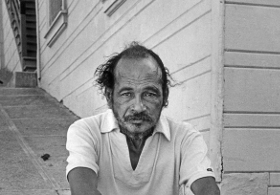

And When I Die, I Won't Stay Dead

Billy Woodberry
USA / Portugal 2015
89 min – HD – Englisch
Deutsche Premiere
B: Billy
Woodberry – K: Pierre Desir S:
Amir Manesh, Luis Nunes
T: Nuno Henrique – P: Billy
Woodberry, Rui Alexandre
Santos
V: Rosa Filmes
Bob Kaufman
(1925–1986), Poet der Beat Generation und „amerika-
nischer Rimbaud”, steuerte eine einzigartige Stimme zu den
poetisch-politischen Vorstellungen der Weltliteratur bei. Der
Film erforscht die wilde Schönheit seines Werks und untersucht
seine Behauptung, dass Poesie von grundlegender Bedeutung für
das moralische Überleben der Menschheit sei.
samstag 8 okt 20.30 uhr werkstattkino
Billy Woodberry geb. 1950 in Dallas, Texas. Mitbegründer des L.A. Rebellion Film Movement um Haile Gerima und Charles Burnett. Sein erster Langfilm „Bless Their Little Hearts” (1984) zählt zu den ersten Arbeiten der afroamerikanischen Bewegung und ist vom italienischen Neorealismus und den politischen Filmen des „Third Cinema” beeinflusst. Er unterrichtet am CalArts und der UCLA in Kalifornien.
Filme The Pocketbook 1980 – Bless Their Little Hearts 1984 – Spirits of Rebellion 2011 – And When I Die, I Won’t Stay Dead 2015